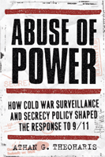

<body bgcolor="#FFFFFF" text="#000000" link="#0000FF" vlink="#CC0000" alink="#CC0000"><center><hr width="350" size="1" align="center" noshade>An argument that domestic surveillance erodes civil liberties and fails to protect the country<hr width="350" size="1" align="center" noshade><p><a href="https://cdcshoppingcart.uchicago.edu/Cart/ChicagoBook.aspx?ISBN=9781439906644&&PRESS=temple" target="_top">Buy this book!</a> | <a href="https://cdcshoppingcart.uchicago.edu/Cart/Cart.aspx?PRESS=temple" target="_top">View Cart</a> | <a href="https://cdcshoppingcart.uchicago.edu/Cart/Cart.aspx?PRESS=temple" target="_top">Check Out</a></p><p></p></center><!--none//--><h1>Abuse of Power</h1>
<H2>How Cold War Surveillance and Secrecy Policy Shaped the Response to 9/11</H2>
<h3>Athan Theoharis</h3>
<P>cloth 1-4399-0664-5 $80.50, Apr 11, <FONT COLOR=#990033>Available</FONT>
<br>paper 1-4399-0665-3 $32.95, Apr 11, <FONT COLOR=#990033>Available</FONT>
<br>Electronic Book 1-4399-0666-1 $32.95 <FONT COLOR=#990033>Available</FONT>
<BR> 232 pp
6x9
</P><BLOCKQUOTE><I>"Theoharis has a long history of criticizing government security programs. No scholar has greater authority or a corpus of scholarship that is more highly respected. </i>Abuse of Power<i> is excellent, and it will immediately command attention�even from those who are only peripherally interested in the subject of surveillance and secrecy. What is distinctive and original about this book is that Theoharis so superbly historicizes the 9/11 response. His argument, essentially, is that the policies from the Roosevelt years were not only illegal but also ineffective in terms of preserving security. Thus, it is not surprising that they did not prevent 9/11."</I>
<BR>&#151<B>Richard Immerman</B>, author of <i>Empire for Liberty: A History of American Imperialism from Benjamin Franklin to Paul Wolfowitz</i></I></BLOCKQUOTE>
<p>Athan Theoharis, long a respected authority on surveillance and secrecy, established his reputation for meticulous scholarship with his work on the loyalty security program developed under Truman and McCarthy. In <em>Abuse of Power</em>, Theoharis continues his investigation of U.S. government surveillance and historicizes the 9/11 response.</p>
<p>Criticizing the U.S. government's secret activities and policies during periods of "unprecedented crisis," he recounts how presidents and FBI officials exploited concerns about foreign-based internal security threats.
</p>
<p>Drawing on information sequestered until recently in FBI records, Theoharis shows how these secret activities in the World War II and Cold War eras expanded FBI surveillance powers and, in the process, eroded civil liberties without substantially advancing legitimate security interests.</p>
<p>Passionately argued, this timely book speaks to the costs and consequences of still-secret post-9/11 surveillance programs and counterintelligence failures. Ultimately, <em>Abuse of Power</em> makes the case that the abusive surveillance policies of the Cold War years were repeated in the government's responses to the September 11 attacks.</p>
<BR>&nbsp;<h2>Excerpt</h2><P>Excerpt available at <a href="http://www.temple.edu/tempress">www.temple.edu/tempress</a></p>
<BR>&nbsp;<h2>Reviews</h2>
<p><i>"</i>Abuse of Power<i> displays Athan Theoharis's deep knowledge of the FBI's operations; he is, after all, the leading authority on the workings of the FBI during the cold war. Here he offers a thorough review of the FBI's historical practices that are similar to�and serve as a precedent for�the violations of civil liberties after 9/11. Theoharis presents the well-known but still chilling story of the way in which Hoover managed to manipulate his superiors, and he also provides a clear and compelling account of the FBI's inability to catch any Soviet spies. </i>Abuse of Power<i> is quite a useful, important, and scrupulously researched book."</i>
<br>&#151<b>Ellen Schrecker</b>, Yeshiva University, author of <i>Many Are the Crimes: McCarthyism in America</i>
<p><i>"This [is an] extensively documented and passionately argued case for a national debate over the issue of domestic intelligence gathering.... Exploring this history of sanctioned abuse of power and limited success, Theoharis warns that the post-9/11 expansion of the FBI's 'political-surveillance authority' should be viewed with skepticism."</i>
<br>&#151<b><i>Publishers Weekly</i></b>
<p><i>"Marshaling a persuasive battery of evidence, Theoharis disputes Bush administration claims that the FBI was hamstrung before 9/11; the bureau already commanded full legal authority to monitor domestic and international communications. Aside from the potentially chilling effect of too much secrecy in high places, Theoharis insists the FBI's elaborate counterintelligence schemes during World War II, the Cold War and the War on Terror netted few results, masked the bureau's shortcomings and allowed it to spy on lawful organizations." </i><br>&#151<b><i>Express Milwaukee</i></b>
<p><i>"Theoharis, the premier scholar of intelligence and domestic security, chronicles the evolution of counterintelligence operations conducted by the FBI from Franklin Roosevelt to George W. Bush.... This book deserves a wide readership, as the FBI's failures in the Cold War may foretell a similar fate for the War on Terror. Summing Up: Highly recommended."</i>
<br>&#151<b><i>CHOICE</i></b>
<p><i>"Through endless diligence, [Theoharis has] cracked some of the deliberately byzantine and misleading naming and filing practices of the Hoover-era FBI and shows us how the same kinds of rhetoric, deception, and abuse of power can, and have, extended to the present. This is a look back that makes you look up, look around, and pay attention. It�s necessary reading for anyone who wants to understand the 20th century, but it�s equally important for alert citizens in the post-9/11 era." </i><br>&#151<b><i>School Library Journal</i></b>
<p><i>"The book goes into great detail about many of the specific operations carried out by the FBI, but the author makes a point related to the failure of intelligence services preceding the 9/11 attack.... [He] provide[s] a well-documented summary of the expansion of the powers of the FBI and demonstrate[s] its abuses of power, the politicization of intelligence, and reasons for its failures."</i>
<br>&#151<b><i>History: Reviews of New Books</i></b>
<BR>&nbsp;<h2>Contents</h2><P>
<p>Acknowledgments
<br>Introduction
<br>1. A New Intelligence Paradigm: Surveillance and Preventive Detention
<br>2. A History of FBI Wiretapping Authority
<br>3. The Politics of Wiretapping
<br>4. A Commitment to Secrecy
<br>5. The Limits of Counterintelligence
<br>6. The Politics of Counterintelligence
<br>7. Ignoring the Lessons of the Cold War
<br>Notes
<br>Index
</P><BR>&nbsp;<H2>About the Author(s)</H2>
<P><strong>Athan Theoharis</strong> is Emeritus Professor of History at Marquette University and author of twenty books, including <em>The Boss: J. Edgar Hoover and the Great American Inquisition</em> and <em>Chasing Spies: How the FBI Failed in Counterintelligence But Promoted the Politics of McCarthyism</em>.</P>
<BR><H2>Subject Categories</H2>
<p><A HREF="/tempress/history.html" TARGET="_top">History</a>
<BR><A HREF="/tempress/political.html" TARGET="_top">Political Science and Public Policy</a>
</p>
<p align="center"><a href="https://cdcshoppingcart.uchicago.edu/Cart/ChicagoBook.aspx?ISBN=9781439906644&&PRESS=temple" target="_top">Buy this book!</a> | <a href="https://cdcshoppingcart.uchicago.edu/Cart/Cart.aspx?PRESS=temple" target="_top">View Cart</a> | <a href="https://cdcshoppingcart.uchicago.edu/Cart/Cart.aspx?PRESS=temple" target="_top">Check Out</a></p><p><font face="Arial" size="1"><a href="copyright.html" onMouseOver="window.status='Web Copyright Policy';return true;" onMouseOut="window.status=''" title="Web Copyright Policy">&copy;</a> 2015 <a href="http://www.temple.edu" target="new" onMouseOver="window.status='Link to Temple University home page';return true;" onMouseOut="window.status=''" title="Link to Temple University home page">Temple University</a>. All Rights Reserved. http://www.temple.edu/tempress/titles/2147_reg.html</font></p>